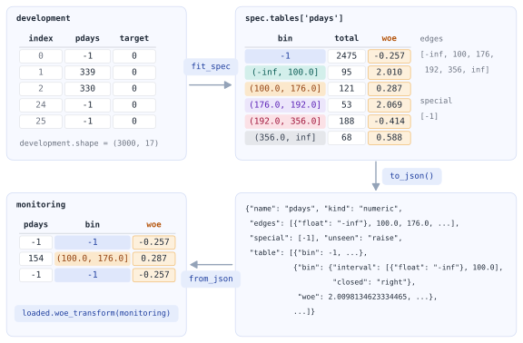

分箱方案#
评分卡在开发、验证和生产中必须以同样的方式对每个变量分组和编码。 fit_spec() 一次调用即可对开发样本的所有列分箱，并计算每个分组的 WOE。得到的 BinningSpec 用同样的边界和 WOE 值对任意其他样本分组和编码。它可以保存为 JSON，并在生产环境中重新加载，且不会改变分组和编码。
每一列都用 分箱 和 证据权重与信息值 中的函数拟合，因此分箱方案中某一列的边界和 WOE 表，与单独对该列执行这些步骤的结果完全相同。确定 信贷策略 及其 政策规则 之后，分箱方案把模型带入生产，它分组的样本再用 群体稳定性指标 监控。
筛选候选变量#
使用默认设置时，每个数值列分为五个等频箱，其他列保留其标签。各列的信息值给出初步排序。如果重合的分位数使某一列的箱数少于期望值，警告会指明该列：
>>> import dataclasses
>>> import warnings
>>> import numpy as np
>>> import pandas as pd
>>> from kivi.datasets import load_bank
>>> from kivi.spec import BinningSpec, fit_spec
>>> data = load_bank()
>>> development, monitoring = data.iloc[:3000], data.iloc[3000:]
>>> with warnings.catch_warnings(record=True) as caught:
... warnings.simplefilter("always")
... quick = fit_spec(development.drop(columns="target"), development["target"])
>>> [str(warning.message).split(":")[0] for warning in caught]
["column 'campaign'", "column 'pdays'", "column 'previous'"]
>>> iv = pd.Series({column: table["iv"].sum() for column, table in quick.tables.items()})
>>> iv.sort_values(ascending=False).round(3).head(5)
duration 1.594
poutcome 0.423
month 0.334
contact 0.215
job 0.137
dtype: float64
quick.tables 把每一列映射到其 woe_table() 结果。除非 columns 指定了部分列，否则会拟合 frame 的所有列。请排除目标变量：如果某一列与 target Series 同名， fit_spec() 会引发错误。
哪些列会被分箱取决于其 dtype。数值列（布尔列除外）会被分箱；其他 dtype 的列（例如字符串、类别或布尔列）以其标签作为分组。若要把整数编码当作标签，请在拟合前把该列转换为 category dtype。只含数值的 object dtype 列会引发警告，因为每个不同的数值都会各成一组；若要对其分箱，请用 pandas.to_numeric 转换。
为每一列选择分箱方式#
method 、 bins 、 special 和 options 都可以是按列的 dict。这里 balance 合并到 WOE 单调为止， pdays 用决策树切分，并让 -1 编码（“之前未联系过”）单独成组， age 使用政策分段。 bins 中的边界列表按原样使用；它必须从 -inf 延伸到 inf ，以确保之后的任何取值都能落入某个箱：
>>> shortlist = ["balance", "pdays", "age", "poutcome", "contact", "housing", "job"]
>>> spec = fit_spec(
... development,
... development["target"],
... columns=shortlist,
... method={"balance": "monotonic", "pdays": "tree"},
... bins={"balance": 4, "age": [-np.inf, 25, 35, 45, 55, 65, np.inf]},
... special={"pdays": [-1]},
... options={"pdays": {"min_bin_share": 0.1}},
... )
>>> spec
BinningSpec(columns=['balance', 'pdays', 'age', 'poutcome', 'contact', 'housing', 'job'])
>>> spec.edges["pdays"]
array([-inf, 100., 176., 192., 356., inf])
>>> spec.tables["pdays"][["total", "event_rate", "woe", "iv"]].round(3)
total event_rate woe iv
bin
-1 2475 0.092 -0.257 0.049
(-inf, 100.0] 95 0.495 2.010 0.235
(100.0, 176.0] 121 0.149 0.287 0.004
(176.0, 192.0] 53 0.509 2.069 0.140
(192.0, 356.0] 188 0.080 -0.414 0.009
(356.0, inf] 68 0.191 0.588 0.010
特殊值编码必须是数值，无穷值必须作为特殊值传入，与 bin_edges() 相同。方法 "quantile" 和 "uniform" 对应 bin_edges ， "chimerge" 、 "tree" 、 "ks" 、 "monotonic" 和 "optimal" 对应有监督分箱函数。 bins 作为 bins 传给 bin_edges ，作为 max_bins 传给其他函数； options 存放它们的其余参数，例如 alpha 、 min_bin_share 或 optimal_edges() 的 trend 。 "monotonic" 使用分箱方案的 smoothing ，因此其单调趋势在 WOE 表中同样成立； "optimal" 不需要平滑，因为它的每个箱都含有两类。 weights 把样本权重传给每个分箱函数和 woe_table() 。
备注
fit_spec() 从不自行重新分箱。旧版的 WOEBatch 会不断减少箱数，直到 WOE 单调；这里由方法及其选项决定，需要单调的列请用 "monotonic" 拟合。
对类别列分组#
类别列保留其标签，除非 method 用 "rare" （用 category_groups() 归并稀有类别）或 "chimerge" （用 chimerge_groups() 合并事件率相近的类别）指定该列；见 类别分组 。此时 bins 是 "chimerge" 的 max_groups ， special 存放 "unknown" 这类标签， options 存放分组函数的其他参数，例如 min_share 或 min_group_share 。字符串形式的 method 只作用于数值列，因此只有 dict 指定的类别列才会分组：
>>> grouped = fit_spec(
... development,
... development["target"],
... columns=["job", "education", "poutcome"],
... method={"job": "chimerge", "education": "rare", "poutcome": "chimerge"},
... special={"job": ["unknown"]},
... options={"education": {"min_share": 0.1}, "poutcome": {"min_group_share": 0}},
... )
>>> grouped.groups["education"]
{'primary': 'primary', 'secondary': 'secondary', 'tertiary': 'tertiary', 'unknown': 'other'}
>>> grouped.tables["poutcome"][["total", "event_rate", "woe"]].round(3)
total event_rate woe
bin
unknown 2475 0.092 -0.257
failure, other 442 0.154 0.326
success 83 0.627 2.548
grouped.groups 把每个已分组的列映射到其从类别到组的 dict，即分组函数的结果， cut() 和 woe_transform() 会应用它。分组映射中没有的类别在 cut 中保留自身标签，这样 psi_table() 会把它显示为一个新组；在 woe_transform 中则按该列的 unseen 策略处理，默认会引发错误：
>>> new_job = monitoring.head(2).assign(job="astronaut")
>>> grouped.cut(new_job)["job"].tolist()
['astronaut', 'astronaut']
>>> grouped.woe_transform(new_job)
Traceback (most recent call last):
...
ValueError: column 'job': 2 value(s) have categories that its grouping does not map, ...
若要修改分组映射，先编辑 dict，再计算新分组的 WOE，然后用 dataclasses.replace 同时替换两者；它会检查 WOE 表中的每个分组都是分组映射中的组。这里把教育程度未知的客户并入初等教育程度的客户：
>>> from kivi.binning import group_categories
>>> from kivi.woe import woe_table
>>> moved = {**grouped.groups["education"], "unknown": "primary"}
>>> table = woe_table(group_categories(development["education"], moved), development["target"])
>>> edited = dataclasses.replace(
... grouped,
... groups={**grouped.groups, "education": moved},
... tables={**grouped.tables, "education": table},
... )
>>> edited.tables["education"]["total"]
bin
primary 573
secondary 1512
tertiary 915
Name: total, dtype: int64
若要让新类别使用某个组（例如稀有类别组）的 WOE，请在 unseen 中用 {"group": label} 指定该组。此时 cut() 把新类别分配到该组， woe_transform() 让它们使用该组的 WOE；重新拟合该列后，它们使用的仍是该组新的 WOE。开发样本没有缺失值时，缺失值也使用该组的 WOE：
>>> to_other = fit_spec(
... development,
... development["target"],
... columns=["education"],
... method={"education": "rare"},
... options={"education": {"min_share": 0.1}},
... unseen={"education": {"group": "other"}},
... )
>>> new_education = monitoring.head(2).assign(education=["doctorate", "primary"])
>>> to_other.cut(new_education)["education"].tolist()
['other', 'primary']
>>> to_other.woe_transform(new_education)["education"].round(3).tolist()
[-0.411, -0.348]
对样本分组和编码#
cut() 对样本的每一列分组， woe_transform() 把每个分组替换为其 WOE。二者都按分箱方案的顺序返回其中的列，索引与样本相同：
>>> spec.cut(monitoring)[["balance", "pdays", "age", "job"]].head(3)
balance pdays age job
3000 (125.7, 895.7] -1 (35.0, 45.0] admin.
3001 (-inf, 68.75] -1 (35.0, 45.0] management
3002 (895.7, inf] -1 (25.0, 35.0] services
>>> X_mon = spec.woe_transform(monitoring)
>>> X_mon.head(3).round(3)
balance pdays age poutcome contact housing job
3000 -0.045 -0.257 -0.166 -0.257 0.206 0.333 0.052
3001 -0.587 -0.257 -0.166 -0.257 -0.917 -0.327 0.271
3002 0.358 -0.257 -0.032 -0.257 0.241 -0.327 -0.339
按数值列拟合的列在每个样本中都必须是数值 dtype。如果按字符串读入，编码 "-1" 就无法匹配其特殊值分组，因此 cut 和 woe_transform 会引发错误；请用 pandas.to_numeric 转换这样的列：
>>> spec.woe_transform(monitoring.assign(pdays=monitoring["pdays"].astype(str)))
Traceback (most recent call last):
...
ValueError: column 'pdays' was fitted as numeric but has dtype ...
分组不在该列 WOE 表中的取值（例如新类别）默认会引发错误，因此不会悄无声息地变成 NaN：
>>> new = monitoring.head(2).assign(job="astronaut")
>>> spec.woe_transform(new)
Traceback (most recent call last):
...
ValueError: column 'job': 1 group(s) are not in table, such as 'astronaut'; ...
fit_spec() 的 unseen 参数为这类取值指定 WOE，可以对所有列统一指定，也可以按列指定。开发样本中没有观测值的特殊值或区间，以及开发样本没有缺失值时的缺失值，也同样处理。分箱方案不可变，因此请用 dataclasses.replace 修改已拟合方案的策略：
>>> lenient = dataclasses.replace(spec, unseen={**spec.unseen, "job": 0.0})
>>> lenient.woe_transform(new)["job"].tolist()
[0.0, 0.0]
保留模型变量#
完成变量筛选后，在为生产环境保存分箱方案之前，只保留模型中的变量：
>>> from kivi.selection import stepwise
>>> selected = stepwise(spec.woe_transform(development), development["target"])
>>> production = spec.select(selected)
>>> production
BinningSpec(columns=['balance', 'pdays', 'poutcome', 'contact', 'housing', 'job'])
production.tables 可以直接传给 points_table() ；参见 评分卡 。
保存和加载分箱方案#
to_json() 把分箱方案写成 JSON 文本， from_json() 将其读回为相等的分箱方案，对每个样本的分组和编码完全相同。两个分箱方案的 JSON 文本相同时二者相等，文本中包含拟合它们的 kivi 版本：
>>> text = production.to_json(indent=2)
>>> loaded = BinningSpec.from_json(text)
>>> loaded == production
True
>>> loaded.woe_transform(monitoring).equals(production.woe_transform(monitoring))
True
由 kivi 较早版本保存的分箱方案仍按原样加载和编码，但它与今天做出的同一拟合结果不相等，因为相等比较包含 kivi_version 。若只比较内容，可用 dataclasses.replace 把新方案的版本赋给已保存的方案。这里的 saved 代表由 kivi 0.7.0 写出的文件：
>>> saved = dataclasses.replace(loaded, kivi_version="0.7.0")
>>> saved == production
False
>>> dataclasses.replace(saved, kivi_version=production.kivi_version) == production
True
相等比较的是每一位数字，而 NumPy 根据处理器选择向量化例程，因此在另一台计算机上重复同一拟合时，WOE 的最后一位数字可能不同，比较结果便为不相等。
兼容性 列出了以后的版本对已保存文件的承诺。
同一个分箱方案总是得到相同的文本，因此可以纳入版本控制并相互比较。标签按原样写出（包括非 ASCII 标签），因此请以 UTF-8 保存文本：
from pathlib import Path
Path("scorecard_spec.json").write_text(production.to_json(indent=2), encoding="utf-8")
production = BinningSpec.from_json(Path("scorecard_spec.json").read_text(encoding="utf-8"))
to_dict() 以 dict 给出相同的内容。每一列是 variables 中的一项：
>>> entry = production.to_dict()["variables"][1]
>>> entry["name"], entry["kind"], entry["unseen"], entry["special"]
('pdays', 'numeric', 'raise', [-1])
>>> entry["edges"]
[{'float': '-inf'}, 100.0, 176.0, 192.0, 356.0, {'float': 'inf'}]
>>> entry["table"][1]["bin"]
{'interval': [{'float': '-inf'}, 100.0], 'closed': 'right'}
>>> entry["table"][1]["woe"]
2.0098134623334465

以 pdays 为例，跟踪分箱方案从拟合到投产的过程。 fit_spec 在开发样本上拟合边界和 WOE 表， to_json 按精确的边界写出它们，用 from_json 加载的方案以完全相同的方式对监控样本分组和编码。#
格式#
键 |
内容 |
|---|---|
|
始终为 |
|
格式的版本：有已分组的列时为 2，否则为 1，早期版本的 kivi 也能读取版本 1。 |
|
拟合该分箱方案的 kivi 版本。 |
|
WOE 表的平滑参数。它只记录拟合时的设置：修改它（例如用 |
|
每列一项，按顺序排列，包含 |
|
每组一项，按顺序排列，包含其标签 |
|
每个分组一项，包含其标签 |
JSON 没有无穷数值，在某些语言中也无法区分标签的类型，因此标签和边界按以下方式写出：
取值 |
JSON |
|---|---|
字符串、整数和布尔值 |
按原样写出： |
浮点数 |
带小数点或指数，例如 |
无穷数值 |
|
区间 |
|
缺失组 |
|
类别列的标签必须是字符串、整数、浮点数、布尔值或区间； fit_spec() 会拒绝其他标签，例如日期。 from_json() 会检查每个值，并拒绝文本中的 NaN 或 Infinity ，因此损坏的文件会报错，而不会编码出错误的值。
表中的区间标签来自 pandas.cut ，其边界为便于显示而经过舍入。文件改用两个精确边界写出数值列的每个区间， from_json 再把它们还原为 pandas.cut 的标签：
>>> float(production.edges["balance"][2])
125.70000000000016
>>> production.tables["balance"].index[1]
Interval(68.75, 125.7, closed='right')
>>> production.to_dict()["variables"][0]["table"][1]["bin"]
{'interval': [68.75, 125.70000000000016], 'closed': 'right'}
备注
在 kivi 之外读取该文件的软件应使用 edges 分箱，像 kivi.binning.cut() 一样先匹配 special 编码再匹配区间，并按两个边界找到每个区间对应的行。开发样本中没有观测值的区间没有对应的行。区间为左开右闭。不属于特殊值编码的无穷值不落入任何组， woe_transform() 把它视为未见分组。对于已分组的列，先在 groups 中查到每个取值的类别所属的组，再找到该组对应的行； groups 中没有列出的类别视为未见类别。